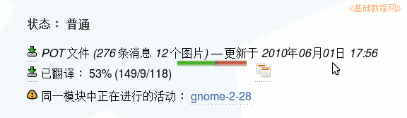
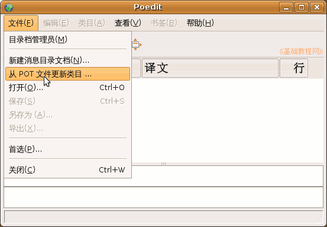
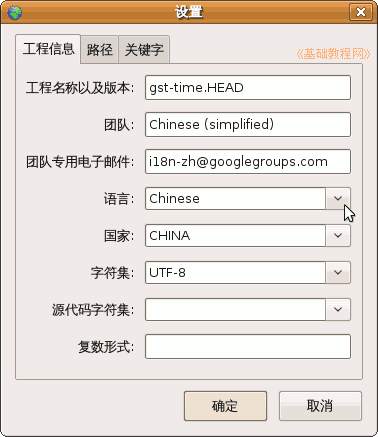
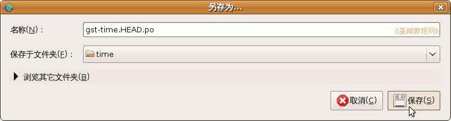
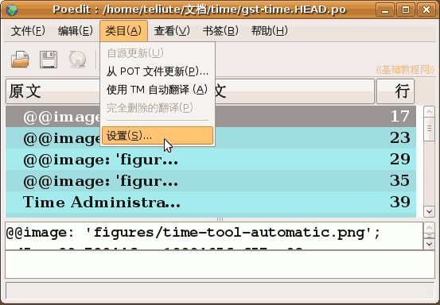

Poedit 基础教程
作者：TeliuTe 来源：基础教程网
Poedit 菜单中有一个更新命令，可以使用 pot 模板生成 po 文件，下面我们来看一个练习；
1、生成 po 文件
1）下载到新版的 pot 文件，软件经常会更新升级，相应的po文件也会更新；

2）启动 Poedit 程序，点菜单“文件-从 POT 文件更新类目”，找到下载的 pot 文件，点击打开；

3）首先出来的是po头信息设置，按要求依次设定；

工程名称：输入pot的文件名即可，
团队：输入自己加入的小组名称，拿不准先为空，
团队专用电子邮件同上，
语言和国家，点右边的下拉按钮，找到 Chinese 和 CHINA
字符集选 UTF-8
中文没有特定的复数形式格式，留空即可；
4）点确定后，出来一个保存对话框，另存为一个po格式文件，修改文件名跟pot相同，然后点保存；

5）以后要修改 po 文件的头信息，可以点菜单“类目-设置”命令进行修改；

本节学习了从pot格式生成po文件的基本操作，如果你成功地完成了练习，请继续学习下一课内容；
本教程由86团学校TeliuTe制作|著作权所有
基础教程网：http://teliute.org/
美丽的校园……
转载和引用本站内容，请保留版权信息和本站链接。